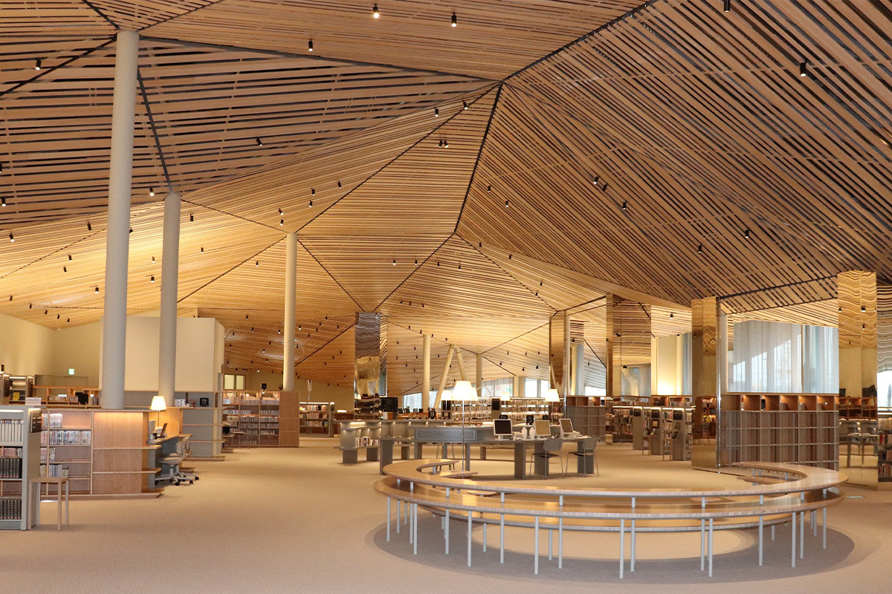
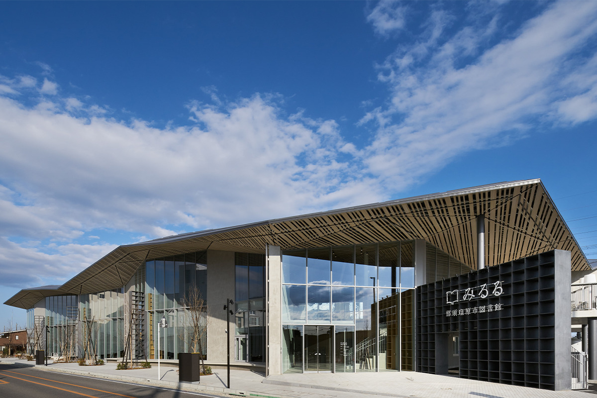
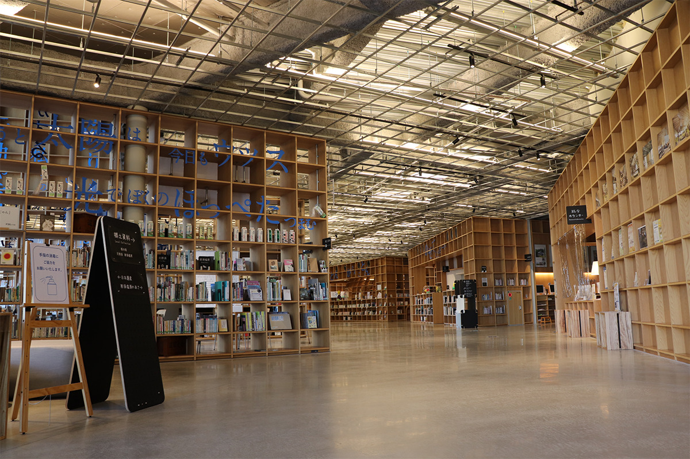
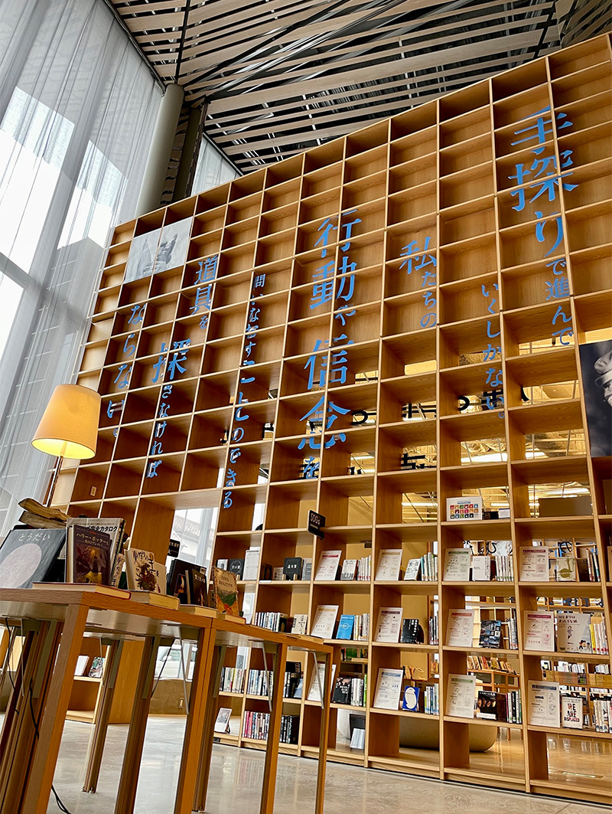
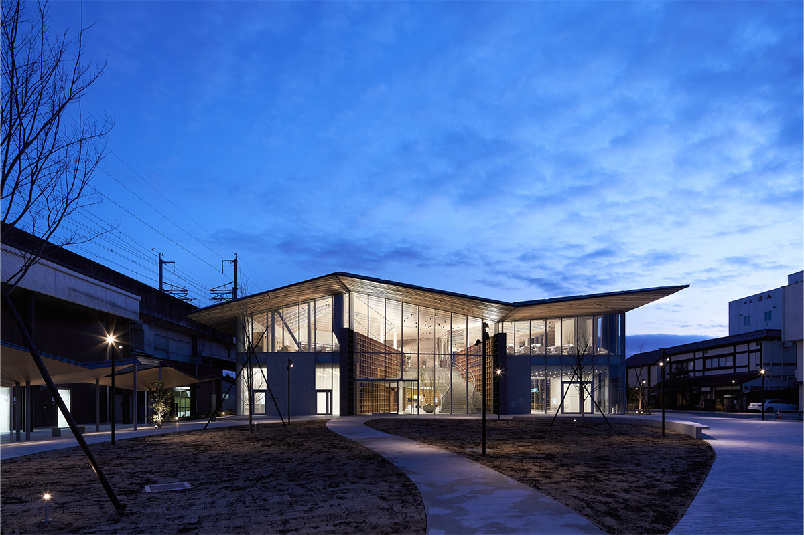
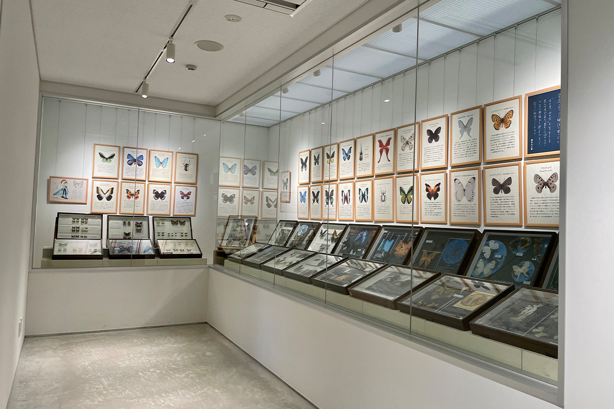
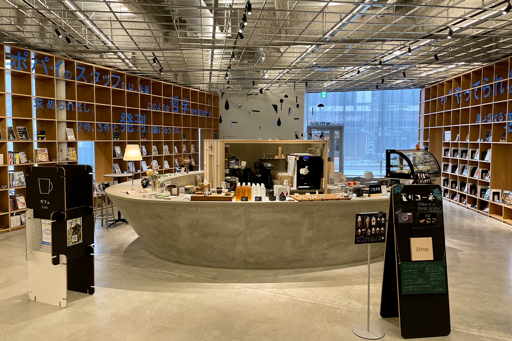
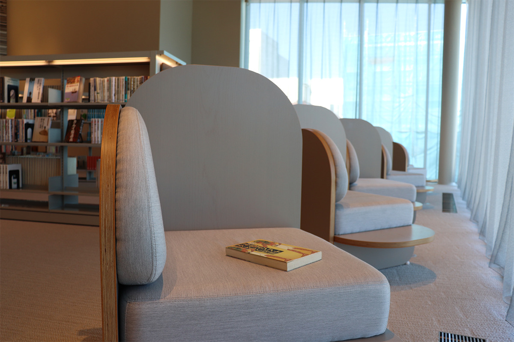

Префектура Тотиги · Насу-Сиобара · архитектура
Библиотека «Мируру» в Насу-Сиобаре: прогулка по лесу из книжных полок у станции Куроисо

Прямо у станции Куроисо в городе Насу-Сиобара стоит библиотека, по которой хочется бродить, как по лесу. Здесь не только читают: в здании есть кафе, галерея и терраса, а сама библиотека стала местом, где встречается весь город.
Город
Библиотека как место встреч
Насу-Сиобара это город на севере префектуры Тотиги, а Куроисо это одна из его станций на линии JR. Библиотеку «Мируру» построили прямо у станции по городской программе обновления центра: Куроисо хотели вернуть жизнь. Она открылась в сентябре 2020 года.

В центре здания библиотека, а вокруг неё зал, галерея и кафе. Получился общий дом для жителей города, куда приходят не только за книгами.
Архитектура
Пространство, похожее на лес
Проект выполнила архитектор Мари Ито из бюро UAo. Лес для Насу-Сиобары это часть её облика, и архитектор перенесла его внутрь здания. По залам расставлены «словесные скульптуры», крупные афоризмы прямо на полках, а вместе с выставками и занятиями они должны подталкивать к тому, чтобы узнавать новое.

Этажи задуманы по-разному. Первый шумный и живой, близкий к повседневной жизни горожан, где пересекаются самые разные дела. Второй отдан книжным залам, где спокойно и удобно уйти в чтение с головой. На первом этаже есть «лесные карманы»: среди «деревьев» вдруг открывается двусветное пространство, словно поляна, где над головой видно небо и падает свет.

Вся библиотека построена на полках, расходящихся лучами. На первом этаже пространство мягко делят решётчатые перегородки, и взгляд проходит сквозь них, как между стволами, поэтому зал воспринимается целиком. На втором этаже лучи полок повторяют круговую диаграмму библиотечной классификации: нужную книгу легко найти по прямой, а между разделами можно гулять, переходя от одной темы к другой.
Над всем зданием висит потолок из реек, похожий на нижний край древесных крон. Он то опускается, то поднимается и делит пространство на большие и малые части. Свет проходит сквозь рейки до самого первого этажа и ложится пятнами, как в лесу.
Архитектор спроектировала и всё вокруг станции, включая привокзальную площадь. Перед вокзалом устроили небольшой парк с деревьями и дорожками. Навесы от дождя у станции сделаны в той же геометрии, что и потолок библиотеки, и здание с зелёной площадью смотрятся одним целым.

Внутри
Что есть в библиотеке
На первом этаже три «лесных кармана». В первом собраны книги об искусстве: здесь проходят художественные события и показывают работы, связанные с местным проектом «Арт 369». Второй посвящён кулинарии, рукоделию и воспитанию детей. На полках для родителей подробные указатели, чтобы быстро найти нужное, а есть и пить здесь можно, так что легко задержаться надолго. В третьем постоянная выставка книг, отмеченных премиями Акутагавы и Наоки, главными литературными наградами Японии, и премией книжных магазинов Японии. Эти книги берут особенно часто. Рядом меняются тематические выставки.
Детская библиотека «Эхон-но мори», «лес книжек с картинками», со всех сторон окружена полками. Читать здесь можно в компании плюшевых героев детских книжек, например одиннадцати котов и белого медвежонка. В центре снимают обувь и валяются на полу, а по субботам читают детям вслух. Есть комната для кормления, нагреватель воды для детской смеси и детский туалет.


Кафе держит «Синрин-но бокудзё», молочная ферма из соседнего городка Насу. Между книгами можно выпить кофе и перекусить. На полках кафе больше 100 журналов на самые разные темы: свежие номера читают на месте, а старые можно взять домой.
На втором этаже есть зал для активного обучения со ступенчатыми сиденьями. Здесь читают, обсуждают книги в группе и занимаются чем угодно. Рядом тихий читальный зал, где не разговаривают и учатся поодиночке. Кроме того, есть кабинки для групп из двух–четырёх человек и индивидуальные кабинки. Учебные места бронируют на терминале в библиотеке.

Библиотека, слитая с привокзальной площадью, делает жизнь города удобнее и даёт больше поводов взять в руки книгу. В этом и состоит её главная задача. Если окажетесь в Куроисо, загляните сюда почитать.
Библиотека «Мируру»
- Адрес
- префектура Тотиги, Насу-Сиобара, Хонтё, 1-1, у западного выхода станции JR Куроисо
- Телефон
- +81 287-63-9031
- Часы работы
- вторник–пятница 10:00–21:00; суббота, воскресенье и праздники 10:00–18:00
- Выходные
- понедельник (если понедельник праздничный, библиотека открыта, а закрыта в следующий будний день)